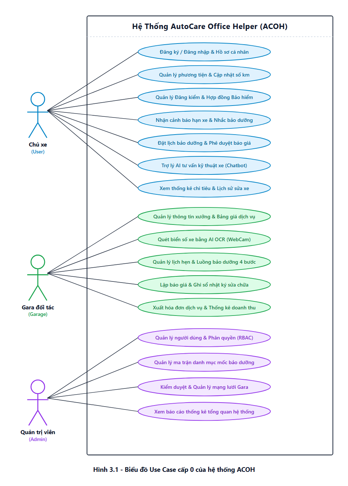
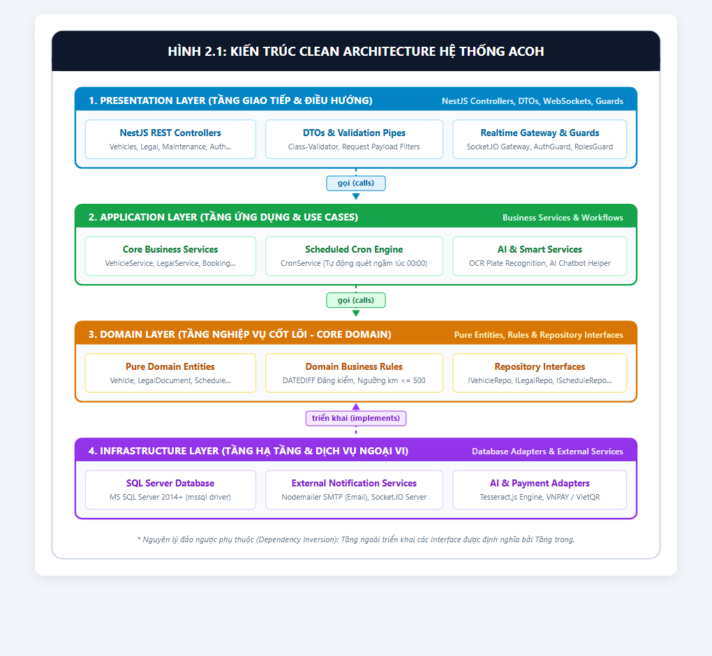
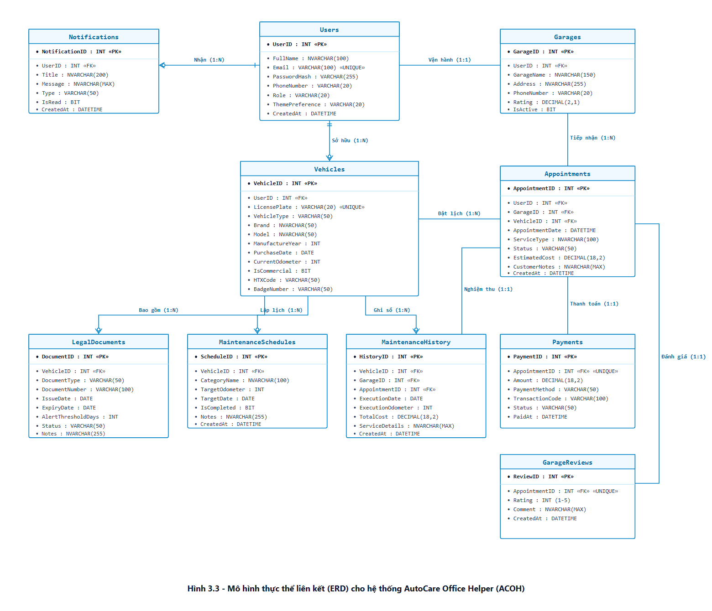
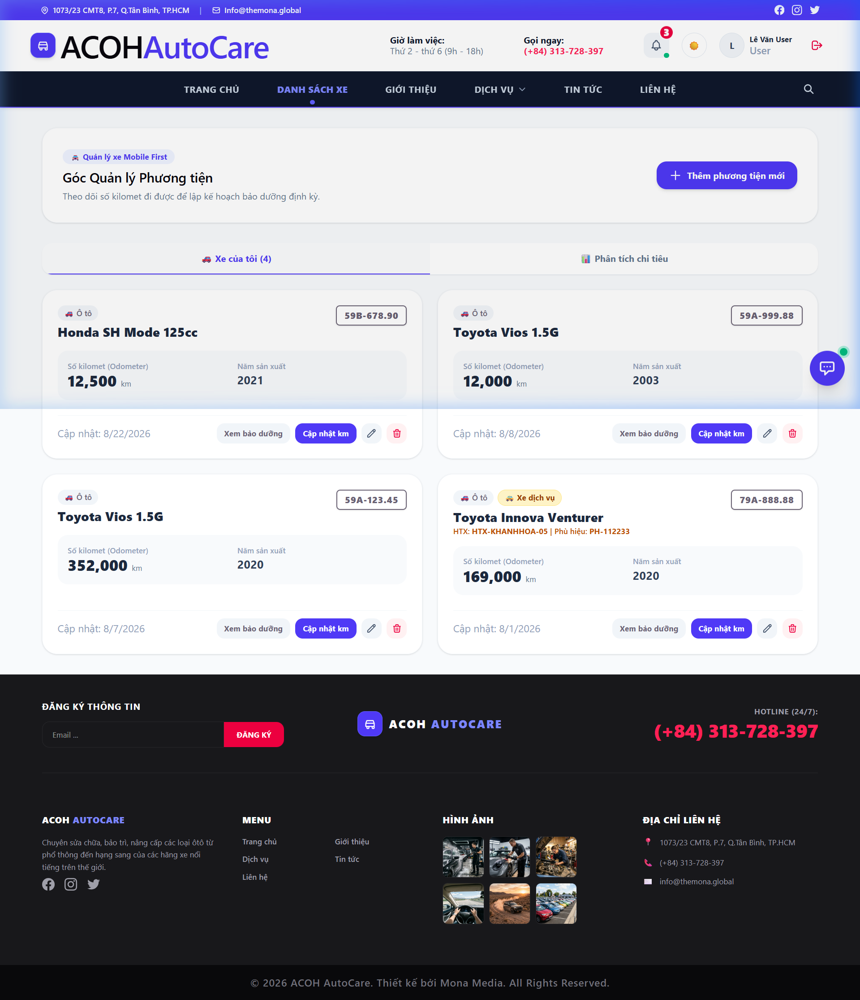
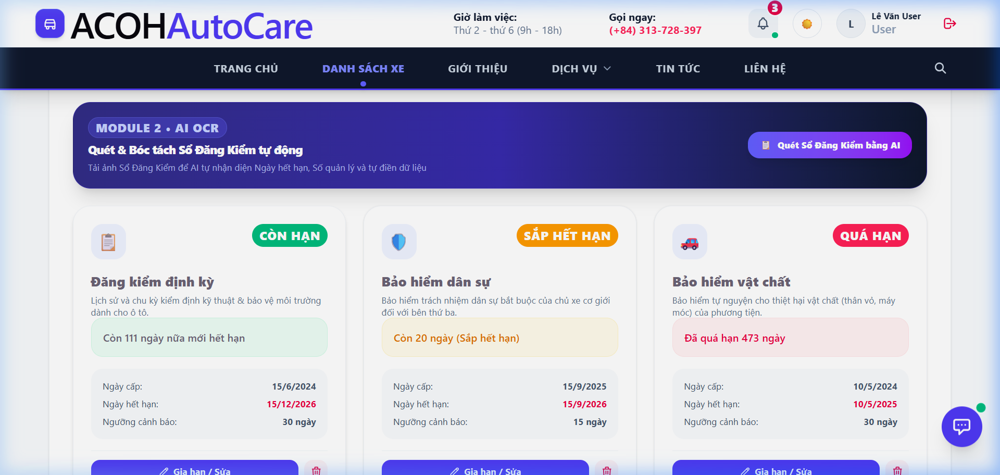
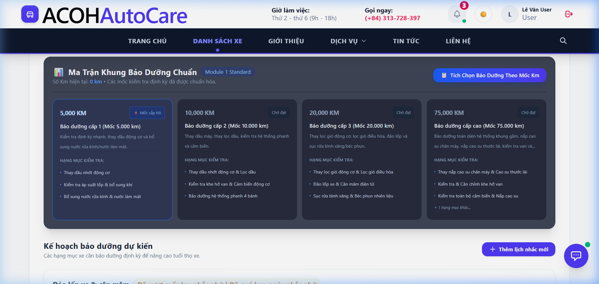
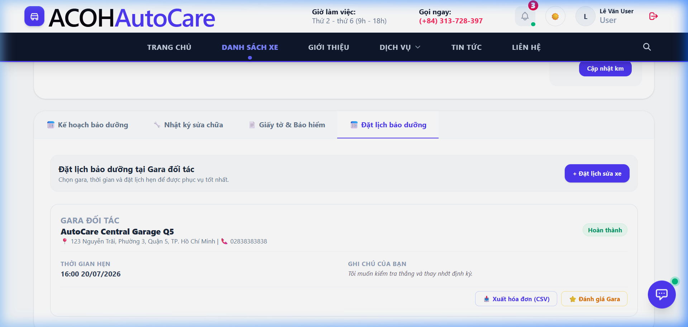
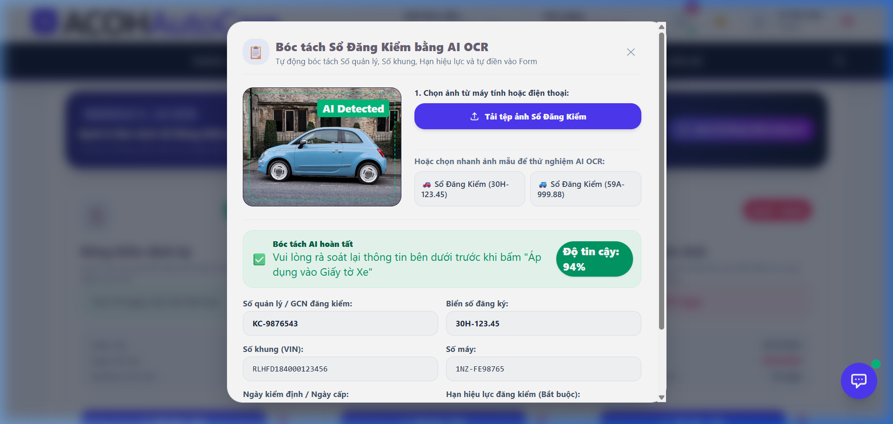
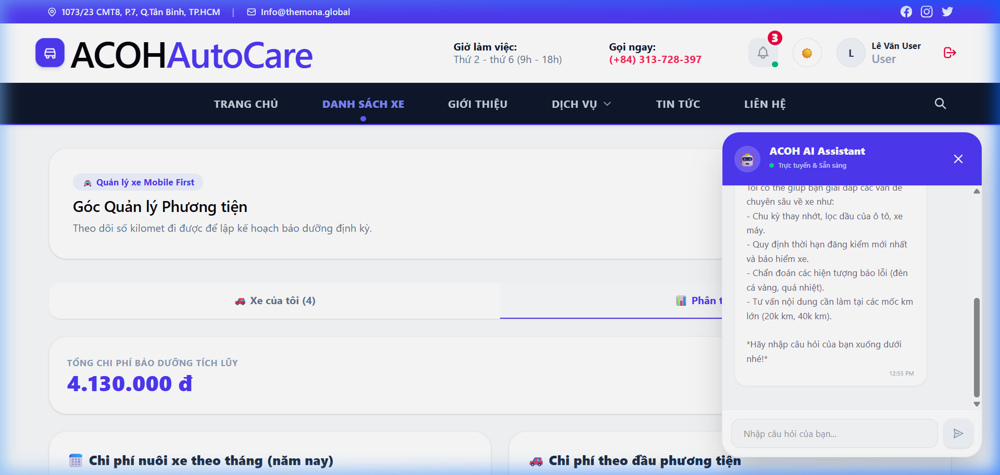
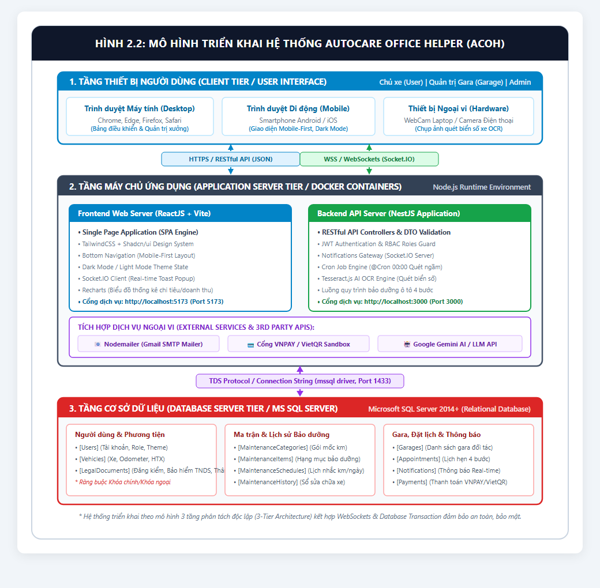

AUTOCARE OFFICE HELPER (ACOH)
Hệ Thống Số Hóa & Tự Động Quản Lý Lịch Đăng Kiểm, Bảo Dưỡng, Bảo Hiểm Phương Tiện Thông Minh Cho Người Bận Rộn
NestJS (TypeScript) + ReactJS + SQL Server 2014+ (3NF chuẩn hóa)
Real-time WebSockets Socket.IO & Email HTML SMTP tự động
Tesseract.js OCR quét WebCam thực tế & Trợ lý tư vấn bảo dưỡng
ThS. / TS. [Họ và Tên GVHD]
Bộ môn Kỹ thuật Phần mềm / CNTT
1. [Họ và Tên Sinh Viên] (MSSV: ...)
Chuyên ngành: Kỹ thuật Phần mềm — Khóa: 2022 - 2026
3 NÚT THẮT THỰC TẾ & TÍNH CẤP THIẾT CỦA ĐỀ TÀI
Quên Mốc Đăng Kiểm & Bảo Dưỡng
- Chủ xe cá nhân & văn phòng thường xuyên quên mốc kiểm định và hạn bảo hiểm bắt buộc TNDS.
- Phạt tiền nặng từ 4 - 16 triệu đồng và tước GPLX khi xe quá hạn đăng kiểm.
- Quên thay dầu nhớt, nước mát gây hao mòn động cơ nghiêm trọng.
Thiếu Công Cụ Giám Sát Chi Phí
- Ghi chép sổ tay hoặc giữ giấy tờ rời rạc, dễ thất lạc hóa đơn sửa chữa.
- Không có công cụ tính tổng chi phí sở hữu (TCO) và theo dõi số kilomet (Odometer) thực tế.
- Khó quản lý đội xe chạy dịch vụ (Grab, Taxi, Hợp tác xã).
Quy Trình Dịch Vụ Chưa Minh Bạch
- Đặt lịch thủ công qua điện thoại, tỷ lệ lỡ hẹn và dồn ứ xe vào giờ cao điểm.
- Chưa có quy trình báo giá điện tử và nghiệm thu 4 bước khép kín.
- Thiếu sổ nhật ký bảo dưỡng điện tử liên thông giữa khách hàng và xưởng.
MỤC TIÊU ĐỀ TÀI & PHÂN QUYỀN ĐA VAI TRÒ (RBAC)

Quản lý ô tô/xe máy, cập nhật nhanh Odometer, nhận cảnh báo hết hạn, đặt lịch hẹn sửa chữa, duyệt báo giá điện tử và hỏi đáp AI Chatbot.
Quét biển số xe bằng AI OCR WebCam, kiểm tra checklist mốc km, lập báo giá điện tử phụ tùng + công, cập nhật sổ bảo dưỡng và xuất hóa đơn.
Quản lý người dùng, phân quyền RBAC nghiêm ngặt, kiểm duyệt gara đối tác tham gia mạng lưới và giám sát Dashboard tăng trưởng hệ thống.
KIẾN TRÚC CLEAN ARCHITECTURE & TECH STACK

- • ReactJS (Vite): Tối ưu hóa render & build siêu nhanh.
- • TailwindCSS + Shadcn/ui: Thiết kế Mobile-First.
- • Socket.IO Client: Nhận thông báo Real-time tức thì.
- • Recharts: Trực quan hóa dữ liệu chi tiêu.
- • NestJS (TypeScript): Kiến trúc Module hóa Clean Arch.
- • JWT & BCrypt: Bảo mật mã hóa mật khẩu 1 chiều.
- • Cron Job Scheduling: Tác vụ quét ngầm lúc 00:00.
- • Nodemailer SMTP: Soạn & gửi mail HTML tự động.
- • MS SQL Server 2014+: RDBMS chuẩn hóa 3NF.
- • Tesseract.js OCR: Nhận diện biển số WebCam.
- • Google Generative AI: LLM Chatbot tư vấn xe.
MÔ HÌNH THỰC THỂ LIÊN KẾT (ERD) & CƠ SỞ DỮ LIỆU

Khi Gara hoàn tất dịch vụ: Thực thi Transaction cập nhật đồng thời Vehicles.CurrentOdometer, ghi MaintenanceHistory, đóng Schedules và phát thông báo — Rollback toàn bộ nếu có lỗi.
QUẢN LÝ PHƯƠNG TIỆN & XE CHẠY DỊCH VỤ (FLEET)

1. Quản lý Đa Phương Tiện
Quản lý ô tô, xe máy với các thông số chuẩn (Hãng, Dòng xe, Năm SX, Biển số Unique).
2. Phân hệ Xe Dịch Vụ (Fleet)
Bổ sung quản lý Mã Hợp tác xã (HTX) và Số Phù hiệu xe cho tài xế Grab, Be, Taxi.
3. Cập nhật Nhanh Odometer
Popup cập nhật số km hàng ngày với validation logic: Chặn nhập Odometer mới nhỏ hơn Odometer cũ.
4. Tự động Khởi tạo Lịch Mẫu
Tự sinh sẵn bộ lịch nhắc bảo dưỡng tiêu chuẩn (+5k, +10k, +40k km) ngay khi thêm xe mới.
HỒ SƠ PHÁP LÝ, ĐĂNG KIỂM & CẢNH BÁO 3 CẤP ĐỘ

Thời gian còn lại > 30 ngày. Phương tiện an tâm lưu thông trên đường.
Thời gian còn lại <= 30 ngày. Hệ thống kích hoạt thông báo nhắc chủ xe gia hạn.
Thời gian < 0 ngày. Cảnh báo nguy cơ bị xử phạt hành chính khi lưu thông.
DATEDIFF(day, GETDATE(), ExpiryDate)
MA TRẬN MỐC BẢO DƯỠNG & ĐỘNG CƠ CRON JOB 00:00

- • 5.000 km: Thay dầu máy, vệ sinh lọc gió.
- • 10.000 km: Thay lọc dầu, đảo lốp, kiểm tra phanh.
- • 20.000 km: Thay lọc gió động cơ & máy lạnh.
- • 40.000 km: Thay dầu số, bugi, nước làm mát.
Quét hạn giấy tờ và mốc kilomet chênh lệch (TargetOdometer - CurrentOdometer <= 500 km) mỗi đêm lúc 00:00.
Phát tín hiệu Real-time WebSockets lên màn hình kết hợp gửi Email HTML Nodemailer đồng thời.
QUY TRÌNH DỊCH VỤ BẢO DƯỠNG GARA 4 BƯỚC

Quét biển số xe bằng AI OCR WebCam, tra cứu ngay lịch sử và hồ sơ xe.
Kỹ thuật viên kiểm tra thực tế, tích chọn checklist mốc km cần bảo dưỡng.
Lập báo giá điện tử (phụ tùng + tiền công + VAT), khách hàng duyệt trên app.
Sửa chữa, xuất hóa đơn điện tử và tự động cập nhật Sổ nhật ký bảo dưỡng xe.
ĐỘT PHÁ CÔNG NGHỆ: AI OCR QUÉT BIỂN SỐ XE WEBCAM

Sử dụng Tesseract.js OCR bóc tách trực tiếp từ video WebCam hoặc ảnh chụp thực tế (không dùng mock string).
Chuẩn hóa tự động biển số ô tô 1 dòng và 2 dòng (VD: 30G-567.89, 51K-123.45).
Truy xuất ngay hồ sơ xe trong CSDL chỉ sau 1 click, loại bỏ hoàn toàn sai sót gõ tay.
TRỢ LÝ ẢO AUTOCARE AI & DASHBOARD THỐNG KÊ

Tích hợp mô hình ngôn ngữ lớn LLM, giải đáp ý nghĩa đèn báo lỗi taplo (Check Engine, ABS...), tư vấn tự chăm sóc xe.
Biểu đồ tròn cơ cấu chi phí (nhớt, phụ tùng, bảo hiểm, đăng kiểm), biểu đồ cột theo tháng và biểu đồ đường Odometer.
Xuất file CSV thống kê chi tiêu chuẩn UTF-8 BOM hiển thị tiếng Việt chuẩn trên Excel; xuất Hóa đơn sửa chữa chi tiết.
Chấm điểm 1 - 5 sao kèm nhận xét sau mỗi lần bảo dưỡng, minh bạch hóa uy tín xưởng.
MÔ HÌNH TRIỂN KHAI VẬN HÀNH (DEPLOYMENT)

Điều hướng lưu lượng truy cập, mã hóa bảo mật SSL/TLS (HTTPS) và nén Gzip tối ưu băng thông.
Chạy ngầm tiến trình NestJS, tự động hồi phục (Zero-downtime) khi phát sinh sự cố.
Duy trì kết nối hai chiều Full-duplex ổn định phục vụ thông báo đẩy tức thì.
Lập lịch sao lưu tự động định kỳ hàng đêm đảm bảo an toàn tuyệt đối cho cơ sở dữ liệu.
KIỂM THỬ CHỨC NĂNG, API & ĐẢM BẢO CHẤT LƯỢNG
Kiểm Thử Chức Năng (Black-box)
- ✔ Đăng ký, đăng nhập JWT, khôi phục OTP qua Email.
- ✔ Phân quyền 3 Role: Chặn User vào
/admin/dashboard. - ✔ Chặn cập nhật Odometer mới nhỏ hơn Odometer cũ.
- ✔ Chuyển đổi trạng thái lịch hẹn 4 bước tuần tự.
Kiểm Thử API & Ràng Buộc CSDL
- ✔ Kiểm thử dữ liệu biên rỗng và sai định dạng trên Postman.
- ✔ Ràng buộc Unique Biển số xe: Trả về HTTP 400 khi trùng.
- ✔ Transaction nguyên tử khi Gara hoàn tất dịch vụ (ACID).
- ✔ Kiểm tra hàm tính DATEDIFF ngày hết hạn chính xác.
Kiểm Thử Real-time & Ngoại Lệ
- ✔ Độ trễ thông báo WebSockets duy trì dưới 200ms.
- ✔ Xử lý ảnh OCR mờ: Khung Editable hiệu chỉnh trực tiếp.
- ✔ Tự động Re-connect khi khôi phục đường truyền mạng.
- ✔ Soạn & gửi mail HTML mượt mà không bị timeout.
KẾT QUẢ ĐẠT ĐƯỢC & ĐÓNG GÓP THỰC TIỄN CỦA ĐỀ TÀI
- Xây dựng thành công ứng dụng Web Responsive chuẩn Mobile-First hỗ trợ Dark Mode mượt mà.
- Làm chủ kiến trúc NestJS Clean Architecture 3 lớp có tính mở rộng cao và bảo trì dễ dàng.
- Thiết kế CSDL SQL Server 3NF, đánh Non-clustered Indexes tối ưu tốc độ truy vấn lớn.
- Tích hợp thành công AI OCR Tesseract nhận diện biển số thực tế và WebSockets Real-time.
- Giải quyết triệt để bài toán quên hạn đăng kiểm, bảo hiểm và mốc thay nhớt cho chủ xe.
- Chuẩn hóa quy trình vận hành dịch vụ Gara 4 bước minh bạch, số hóa hóa đơn điện tử.
- Cung cấp công cụ quản lý đội xe chạy dịch vụ (HTX, Phù hiệu) phù hợp luật giao thông Việt Nam.
- Tạo dựng kênh kết nối trực tiếp, tin cậy giữa chủ xe và hệ thống xưởng dịch vụ.
ĐỊNH HƯỚNG PHÁT TRIỂN & MỞ RỘNG TRONG TƯƠNG LAI
Cổng Tin Nhắn Zalo ZNS & SMS Brandname
Gửi cảnh báo trực tiếp qua Zalo OA và SMS thương hiệu đến số điện thoại chủ xe, đảm bảo không bỏ lỡ cảnh báo ngay cả khi không mở ứng dụng.
AI OCR Bóc Tách Sổ Đăng Kiểm Tự Động
Ứng dụng AI Vision bóc tách toàn bộ thông số kỹ thuật (Số quản lý, Biển số, Số khung VIN, Số máy, Hạn kiểm định) trực tiếp từ ảnh chụp Sổ đăng kiểm.
Kết Nối Phần Cứng IoT OBD-II / GPS
Cắm thiết bị OBD2 hoặc GPS trên xe để tự động truyền số Odometer thực tế và đọc mã lỗi phần cứng động cơ (DTC Codes) về máy chủ qua MQTT.
Ứng Dụng Di Động Native App (iOS & Android)
Đóng gói ứng dụng di động Native trên nền tảng React Native / Flutter kèm thông báo đẩy nền Firebase Cloud Messaging (FCM).
CHÂN THÀNH CẢM ƠN QUÝ THẦY CÔ
Trong Hội đồng chấm bảo vệ Đồ án Tốt nghiệp đã chú ý theo dõi và lắng nghe!
PHIÊN HỎI ĐÁP & ĐÓNG GÓP Ý KIẾN (Q&A)
Em xin trân trọng lắng nghe và tiếp thu những nhận xét, đánh giá quý báu cùng các câu hỏi phản biện từ Quý Thầy/Cô để tiếp tục hoàn thiện đề tài.
AutoCare Office Helper (ACOH) — Báo cáo đồ án tốt nghiệp Kỹ thuật Phần mềm